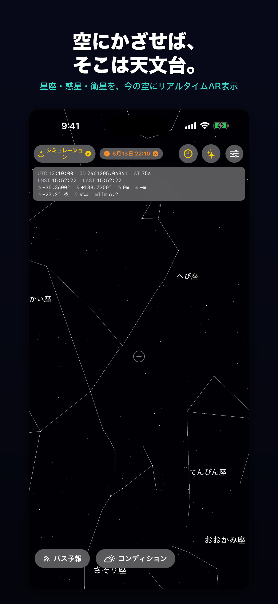
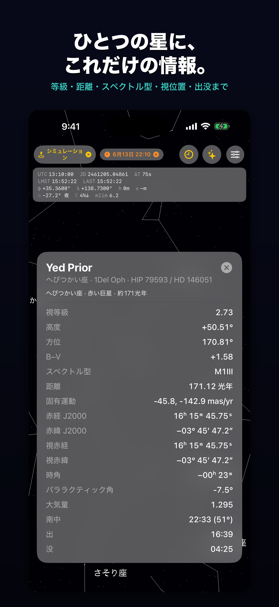
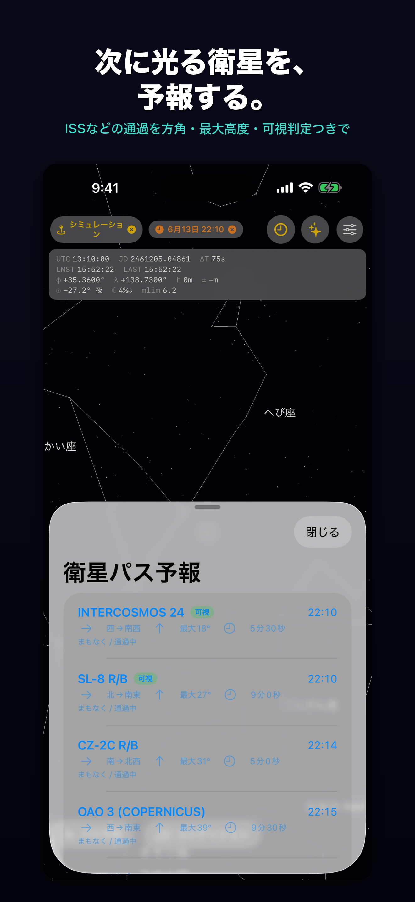
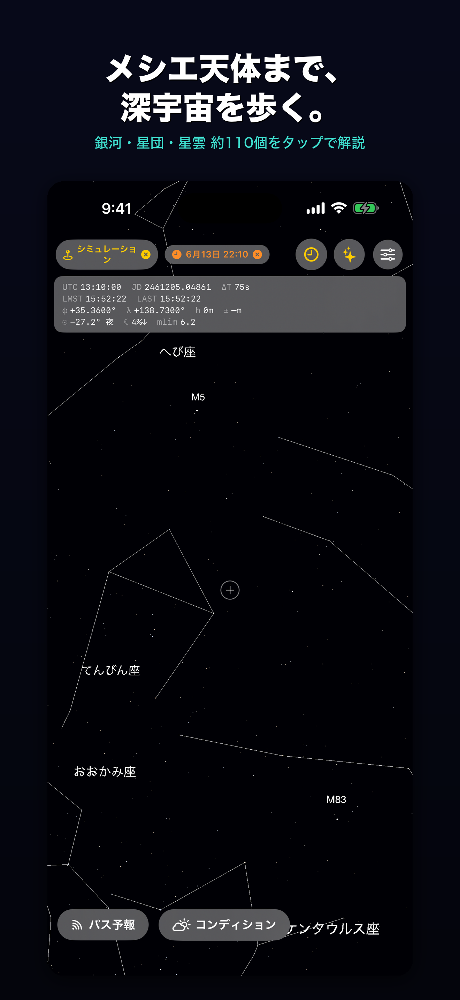
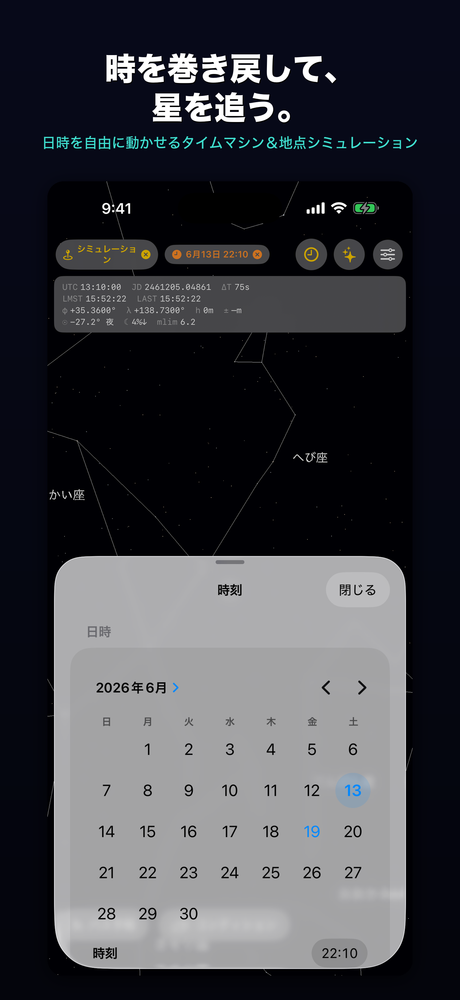
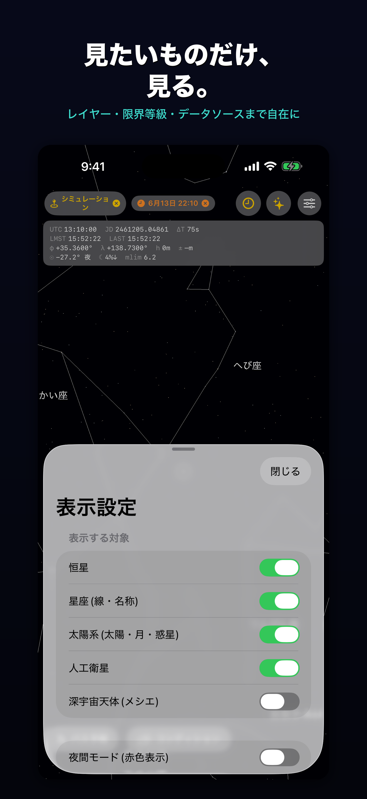

端末を夜空にかざすだけ。星座・惑星・人工衛星を、その場の空にARで重ねて表示する天体観測アプリ。
iOS 16 以降対応。AR表示にはカメラと位置情報を使用します。配信開始までしばらくお待ちください。
眺めて楽しむだけでなく、研究・観測グレードの精密な計算で「今・ここで実際にどう見えるか」を示します。
約8,900個の恒星と88星座を、星座線と名前つきで実際の空に重ねて表示します。
太陽・月・水星〜海王星を色分け表示。地平線下の天体は自動で非表示にします。
ISSなどの位置をリアルタイム表示。出現方位・最大高度・可視判定・雲量つきの通過予報を案内します。
どの天体もタップで等級・距離・赤経赤緯・高度方位・出南中没を表示。神話や豆知識つきの解説も。
日時を自由に設定し、早送り・巻き戻しで星空の動きを再現。過去や未来の空も眺められます。
地図タップや緯度経度入力で、世界中どこの空でも再現。旅行先の星空も事前にチェック。
現地の実際の気象から透明度・結露リスク・「実効限界等級」を表示。今夜見えるかが分かります。
カメラを暗くし、色とりどりの星をきらめかせて表示。室内でも星空を楽しめます。






理想化された空ではなく、「実際にどう見えるか」にこだわった計算を行います。
歳差・章動・年周光行差・固有運動を適用。月は地形心視差(最大約1°)も補正。
取得した実際の気圧・気温で大気差を補正し、地平線近くの見え方を再現。
恒星時・ユリウス日・ΔT・観測地点などの数値をリアルタイムで表示。
星表は内蔵のためオフラインでも空を表示(気象と最新の衛星データは通信を使用)。
※ ARの重ね位置は端末の方位センサに依存するため数度ずれることがあります。各天体の数値は精密に計算しています。